Navier–Stokes 方程与弱形式
不可压缩 Navier–Stokes 方程是描述粘性不可压流体随时间演化的基本模型，广泛应用于工程、物理和生物流体等领域。在本节中，我们将介绍其强形式与弱形式，并为后续数值离散构建理论基础。
1. 方程组
考虑在时空区域 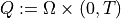 上的不可压缩 Navier–Stokes 方程，其组成如下：
动量方程（Newton 第二定律）：
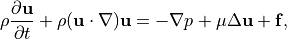
质量守恒方程（不可压缩性约束）：
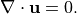
其中变量含义为：
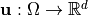 为速度场；
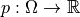 为压力场；
 为常数密度；
为常数密度； 为动力黏性系数；
为动力黏性系数；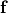 为体积力源项；
通常 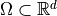，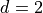 或
 。
。
2. 初始与边界条件
为使问题适定，需要规定以下边值条件与初始条件：
速度 Dirichlet 边界条件：
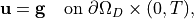
Neumann 自然边界条件（对应出口或自由边界）：
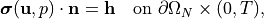
其中

初始条件：
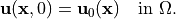
3. 弱形式推导
为进行有限元离散，我们对方程组乘以测试函数，并在空间上积分，得到如下弱形式。
设：
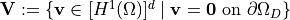；
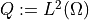。
则寻找 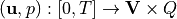，使得对于任意 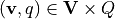，有：
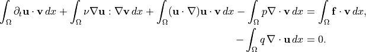
附带初始条件：
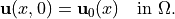
1. 必要准备
1.1 导入必要库
[1]:
from ngsolve import *
from ngsolve.webgui import Draw
from netgen.occ import *
from netgen.webgui import Draw as DrawGeo
import matplotlib
import numpy as np
import matplotlib.pyplot as plt
1.2 必要参数设置
[2]:
nu = 0.001
dt = 0.001
k = 3
tend = 1
t = 0; cnt = 0
2. 几何建模与网格生成（Geometry and Mesh Generation）
为研究不可压缩纳维-斯托克斯（Navier–Stokes）方程在典型二维内部流动结构中的数值行为，本文采用有限元软件 NGSolve 构建了一个包含圆柱障碍物的二维矩形通道几何模型。该几何结构为经典的 流经圆柱的流体问题（flow around a cylinder） 提供了基础测试平台。
2.1 几何定义
本研究所用的二维流动区域由以下部分构成：
一个长为 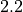、高为 的矩形通道；
通道内部嵌有一个位于坐标点 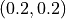、半径为 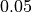 的圆柱障碍物。
上述几何通过 Netgen/NGSolve 的 OCCGeometry 模块构造如下：
[3]:
shape = Rectangle(2.2,0.41).Circle(0.2,0.2,0.05).Reverse().Face()
2.2 边界条件区域标记
为设定恰当的边界条件，需为几何边界赋予明确的名称，以便在后续弱形式构造与有限元空间定义中调用。具体边界标记如下：
[4]:
# 为几何边界命名，用于后续施加边界条件
shape.edges.name = "cyl" # 内部圆柱边界
shape.edges.Min(X).name = "inlet" # 左侧入口边界
shape.edges.Max(X).name = "outlet" # 右侧出口边界
shape.edges.Min(Y).name = "wall" # 下壁面
shape.edges.Max(Y).name = "wall" # 上壁面
2.3 网格生成
构建完成的几何体通过 OCC（OpenCascade） 内核生成有限元网格。为平衡计算效率与精度，本文将最大单元尺寸 maxh 设置为 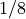，并使用三阶曲线单元对边界进行几何拟合。
[5]:
mesh = Mesh(OCCGeometry(shape, dim=2).GenerateMesh(maxh=1/8)).Curve(3)
# `GenerateMesh(maxh=1/8)` 表示使用最大网格尺度为 $0.125$；
# `.Curve(3)` 将几何边界提升为三阶拟合，以更准确地表示圆柱边界。
绘制图像（可选）
[6]:
DrawGeo(shape);
Draw(mesh);
3. 有限元空间，边界条件与初值条件设定（Finite Element Spaces, Boundary Conditions and Initial Condition）
为求解不可压缩 Navier–Stokes 方程，我们采用混合有限元方法构造速度和压力的函数空间。速度采用二阶向量型连续有限元（VectorH1），压力采用一阶标量连续有限元（H1），从而形成经典的 P2-P1 速度-压力配对，满足稳定性条件。
3.1 有限元空间定义
[7]:
V = VectorH1(mesh, order=k, dirichlet="wall|cyl|inlet") # 设置速度空间，指定 Dirichlet 边界为壁面、圆柱和入口
Q = H1(mesh, order=k-1) # 压力空间为标量一阶 H1 空间
X = V * Q # 构造混合有限元空间（速度 × 压力）
3.2 解函数与边界条件设定
在耦合空间 X 上定义解函数 gfu ，其包含速度和压力两个分量，分别命名以方便调用和边界条件施加。
[8]:
gfu = GridFunction(X)
velocity, pressure = gfu.components
为解向量定义非齐次Dirichlet边界条件 在入口处施加典型的层流抛物线速度分布，其  方向速度分布为：
方向速度分布为：
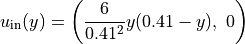
该分布在上下壁面速度为零，中部最大，符合管道流理论。
[9]:
uin = CoefficientFunction((1.5 * 4 * y * (0.41 - y) / (0.41 * 0.41), 0)) # 抛物线型入口速度分布
velocity.Set(uin, definedon=mesh.Boundaries("inlet")) # 在 inlet 边界上设置速度 Dirichlet 条件
绘制图像（可选）
[10]:
Draw(velocity);
Draw(pressure);
3.3 Stokes 初始解的构造
为提供稳定的初值，用稳态 Stokes 问题构造一个速度–压力场作为初始化。首先定义试验函数和检验函数，并构建双线性形式：
[11]:
(u, p), (v, q) = X.TnT() # 获取试验函数与检验函数
a = BilinearForm(X) # 定义双线性形式
stokes = (nu * InnerProduct(grad(u), grad(v)) - div(u) * q - div(v) * p) * dx # Stokes 双线性项
a += stokes # 加入双线性形式中
a.Assemble(); # 组装刚度矩阵
f = LinearForm(X) # 定义右端项
f.Assemble() # 组装右端项
[11]:
<ngsolve.comp.LinearForm at 0x1b0b8e3e270>
最后求解 Stokes 系统，并将解更新至 ‘gfu.vec’ 以作为后续 Navier–Stokes 求解的初始值：
[12]:
res = f.vec - a.mat * gfu.vec # 计算初始残差
inv_stokes = a.mat.Inverse(X.FreeDofs()) # 构建在自由自由度上的逆算子
gfu.vec.data += inv_stokes * res # 更新解函数为稳态 Stokes 解
[13]:
drag_x_test = GridFunction(X)
drag_x_test.components[0].Set(CoefficientFunction((-20.0,0)), definedon=mesh.Boundaries("cyl"))
drag_y_test = GridFunction(X)
drag_y_test.components[0].Set(CoefficientFunction((0,-20.0)), definedon=mesh.Boundaries("cyl"))
绘制图像（可选）
[14]:
Draw(velocity);
Draw(pressure);
4 时间离散与对流项处理
不可压缩 Navier–Stokes 方程的完整形式为：
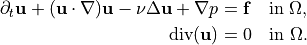
4.1 一般形式
我们采用 隐式–显式欧拉时间离散（IMEX Euler） 策略，对时间导数项使用向后差分，对扩散项隐式处理，对对流项显式处理。
设当前时间为 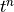，时间步长为  ，已知速度解 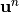，则时间离散形式为：
，已知速度解 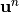，则时间离散形式为：
 , s.t. for all
, s.t. for all 
\begin{align} \underbrace{m(\mathbf{u}^{n+1},\mathbf{v}) + \Delta t ~\cdot~a((\mathbf{u}^{n+1},p^{n+1}),(\mathbf{v},q))}_{ \to M^\ast} ~=~m(\mathbf{u}^{n},\mathbf{v}) - \Delta t ~\cdot~c(\mathbf{u}^{n}; \mathbf{u}^{n},\mathbf{v}) \end{align}
非齐次 Dirichlet 边界条件的处理
上节推导的离散系统默认速度满足 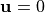 于 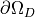（即齐次 Dirichlet 条件）。在实际问题中，尤其是通道流、绕流问题中，我们往往在入口边界施加给定的速度剖面（如抛物线型分布）：
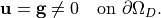
为处理这类非齐次边界条件，常用的方法是变量替换法（lifting method），即将问题的解写为：
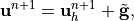
其中：
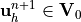，满足齐次边界条件，即 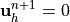 on ；
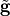 是某个固定向量场，满足边界条件 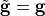 on ，在内部可以任意延拓。
将 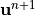 代入离散系统中，并将其分离为：
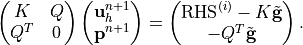
我们看到，非齐次边界条件的影响表现为右端项的修正，且不改变系统矩阵本身的结构。这种处理方法有两个优点：
不需修改原有刚度矩阵装配过程；
保证数值求解仅在自由度上进行，边界值通过 注入解中。
在实现中， 通常通过如下方式构造：
在边界上插值速度剖面 ；
在内部扩展为零或任意连续向量场；
将其作为
GridFunction的“已知值”施加在 Dirichlet 边界上；并将自由节点构成的子系统送入线性求解器。
[15]:
gfuD = GridFunction(X)
velocityD, pressureD = gfuD.components
velocityD.Set(uin, definedon=mesh.Boundaries("inlet"))
mstar = BilinearForm(X)
mstar += InnerProduct(u,v)*dx + dt*stokes
mstar.Assemble()
inv = mstar.mat.Inverse(X.FreeDofs())
conv = BilinearForm(X, nonassemble = True)
conv += (Grad(u) * u) * v * dx
m = BilinearForm(InnerProduct(u,v)*dx).Assemble()
gfut = GridFunction(gfu.space,multidim=0)
time_vals, drag_x_vals, drag_y_vals = [],[],[]
gfut.AddMultiDimComponent(gfu.vec)
t = 0; cnt = 0
while t < tend-0.5*dt:
print ("\rt=", t, end="")
conv.Assemble()
# print(conv.mat)
rhs = (m.mat - dt * conv.mat) * gfu.vec - mstar.mat * gfuD.vec
gfu.vec.data = gfuD.vec + inv * rhs
t = t + dt; cnt += 1
res = (a.mat + conv.mat) * gfu.vec
drag_x_vals.append(InnerProduct(res, drag_x_test.vec) )
drag_y_vals.append(InnerProduct(res, drag_y_test.vec) )
time_vals.append(t)
if cnt % 100 == 0:
gfut.AddMultiDimComponent(gfu.vec)
t= 0.999000000000000876
[16]:
Draw (gfut.components[0], mesh, interpolate_multidim=True, animate=True,
min=0, max=1.9, autoscale=False, vectors = True)
Draw (gfut.components[1], mesh, interpolate_multidim=True, animate=True,
min=-0.5, max=1, autoscale=False)
# Plot drag force over time
plt.plot(time_vals, drag_x_vals)
plt.xlabel('time'); plt.ylabel('drag'); plt.title('drag'); plt.grid(True)
plt.show()
# Plot lift force over time
plt.plot(time_vals, drag_y_vals)
plt.xlabel('time'); plt.ylabel('lift'); plt.title('lift'); plt.grid(True)
plt.show()
4.2 增量形式
在增量格式中，如采用显式对流–隐式扩散结构（参考 Section~:nbsphinx-math:ref{subsec:bdf1-assembly} 的增量推进格式），速度更新形式为：
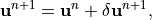
其中  为当前步的速度增量。此时，边界条件 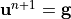 被改写为：
为当前步的速度增量。此时，边界条件 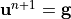 被改写为：
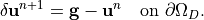
因此，在构造增量形式下的系统时，只需将边界值 替换为 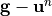，即可保证增量项满足新的 Dirichlet 条件。
数值实现中，一般先构造上一时刻插值 ，再计算差值：
与全量系统处理方式一致，增量式下 lifting 同样以修正右端项为主，系统矩阵结构不受影响。
该策略不仅适用于 Navier–Stokes，也适用于带非齐次边界条件的任意双线性时间推进系统。
前置步骤同前
[17]:
gfu = GridFunction(X)
velocity, pressure = gfu.components
uin = CoefficientFunction((1.5 * 4 * y * (0.41 - y) / (0.41 * 0.41), 0)) # 抛物线型入口速度分布
velocity.Set(uin, definedon=mesh.Boundaries("inlet")) # 在 inlet 边界上设置速度 Dirichlet 条件
(u, p), (v, q) = X.TnT() # 获取试验函数与检验函数
a = BilinearForm(X) # 定义双线性形式
stokes = (nu * InnerProduct(grad(u), grad(v)) - div(u) * q - div(v) * p) * dx # Stokes 双线性项
a += stokes # 加入双线性形式中
a.Assemble(); # 组装刚度矩阵
f = LinearForm(X) # 定义右端项
f.Assemble() # 组装右端项
res = f.vec - a.mat * gfu.vec # 计算初始残差
inv_stokes = a.mat.Inverse(X.FreeDofs()) # 构建在自由自由度上的逆算子
gfu.vec.data += inv_stokes * res # 更新解函数为稳态 Stokes 解
[18]:
mstar = BilinearForm(X)
mstar += InnerProduct(u,v)*dx + dt*stokes
mstar.Assemble()
inv = mstar.mat.Inverse(X.FreeDofs())
conv = BilinearForm(X, nonassemble = True)
conv += (Grad(u) * u) * v * dx
gfut = GridFunction(gfu.space,multidim=0)
time_vals, drag_x_vals, drag_y_vals = [],[],[]
gfut.AddMultiDimComponent(gfu.vec)
t = 0; cnt = 0
while t < tend-0.5*dt:
print ("\rt=", t, end="")
conv.Assemble()
# print(conv.mat)
res = (a.mat + conv.mat)* gfu.vec
gfu.vec.data -= dt * inv * res
t = t + dt; cnt += 1
res = (a.mat + conv.mat) * gfu.vec
drag_x_vals.append(InnerProduct(res, drag_x_test.vec) )
drag_y_vals.append(InnerProduct(res, drag_y_test.vec) )
time_vals.append(t)
if cnt % 100 == 0:
gfut.AddMultiDimComponent(gfu.vec)
t= 0.999000000000000876
动态图及drag-lift图像绘制（可选，若网格较细，动态图绘制可能对电脑造成较大负担）
[19]:
Draw (gfut.components[0], mesh, interpolate_multidim=True, animate=True,
min=0, max=1.9, autoscale=False, vectors = True)
Draw (gfut.components[1], mesh, interpolate_multidim=True, animate=True,
min=-0.5, max=1, autoscale=False)
# Plot drag force over time
plt.plot(time_vals, drag_x_vals)
plt.xlabel('time'); plt.ylabel('drag'); plt.title('drag'); plt.grid(True)
plt.show()
# Plot lift force over time
plt.plot(time_vals, drag_y_vals)
plt.xlabel('time'); plt.ylabel('lift'); plt.title('lift'); plt.grid(True)
plt.show()
内容保存（使用paraview进行图像可视化）
5. 结果输出与可视化准备（Postprocessing and Visualization Setup）
数值模拟完成后，我们对所得解进行保存与可视化，主要包括两类数据：
时间演化过程中阻力与升力的变化曲线；
多帧速度与压强场的导出，用于可视化（如 Paraview）。
我们将时间、 方向阻力（drag）与  方向升力（lift）保存为
方向升力（lift）保存为 .npz 格式，便于后续分析或绘图。
为实现时序数据的三维可视化，我们还将解序列中的速度与压强分别导出为 VTK 文件。由于 NGSolve 是二维计算域，为满足 VTK 三维向量格式要求，需将速度向量补全为 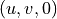：
最终，在 ouputdir/Cylinder_Incremention_BDF1/ 目录下，将生成多个 .vtu 文件，供后续使用 Paraview 等工具进行可视化展示和动画制作。
[20]:
import numpy as np
np.savez('cylinder_drag_lift.npz', time=time_vals, drag=drag_x_vals, lift=drag_y_vals)
import os
outdir = r".\ouputdir\Cylinder_Incremention_BDF1"
os.makedirs(outdir, exist_ok=True) # 自动创建目录
file_path = os.path.join(outdir, "1000_8_1000")
vel_cf = CoefficientFunction((
gfu.components[0][0],
gfu.components[0][1],
0.0 # 补上 Z 分量，使其为 3D vector
))
pres_cf = gfu.components[1]
vtkout = VTKOutput(
mesh,
coefs = [vel_cf, pres_cf],
names = ["velocity", "pressure"],
filename = file_path,
subdivision = 2
)
nframes = len(gfut.vecs) # 多帧数量
for i in range(nframes):
# 提取第i帧的解
gfu.vec.data = gfut.vecs[i] # 恢复到第i帧
outname = vtkout.Do(time=i)
print("已写出：", outname)
已写出： .\ouputdir\Cylinder_Incremention_BDF1\1000_8_1000_step00010